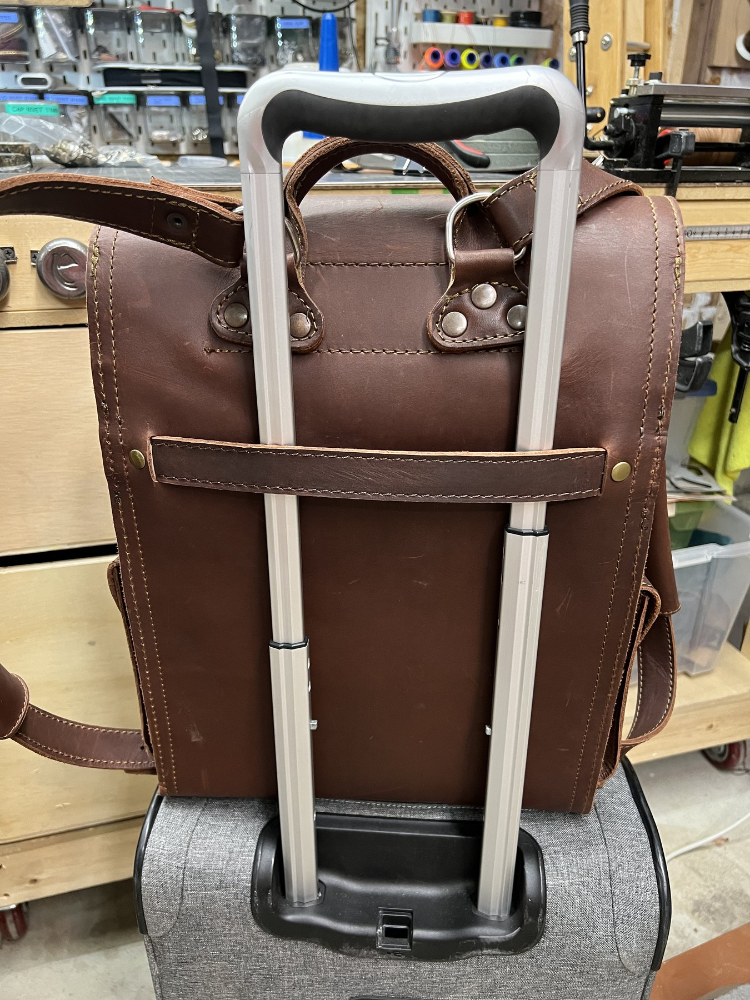

How it is made
From hide to hand
Six steps, done in the same order every time. None of them are shortcuts.
Stitching on the bench. Twenty five seconds of what an afternoon here looks like.
The hide
We work in chrome tanned, vegetable tanned, and Horween leather. Each one handles differently on the bench, so the leather gets picked for the piece. Every hide is inspected before anything gets cut.
The pattern
We start in the digital world. Each design gets drawn on the computer first, then our laser cuts a full size template so we can hold the real thing before any leather gets cut. From there we build a prototype and carry it for a few weeks, changing whatever does not work. Some designs take a year to get right.
The cut
Most pieces go down on the hide over a chipboard template. The pieces we make over and over have dies made up so they come out the same every time, and anything truly custom gets cut entirely by hand, start to finish. Grain direction matters, and so does the stretch.
The edge
Edges get sanded and waxed until they are smooth and sealed. Vegetable tanned and Horween edges get burnished to a shine. Chrome tanned we leave with the rugged look. This is the step most people skip and the one you feel every day.
The stitch
We love hand stitching, and most of our pieces are stitched entirely by hand. For long seams we take a rest and run those through the machine, then the edges and the lines you actually see go through saddle stitching by hand. Waxed thread grips, so a break in one stitch will not unravel the run. By hand we use Ritza 25 Tiger Thread. Through the machine we use bonded polyester. Both are picked to last for years.
The finish
A final conditioning, a check of every seam, and your piece goes in the box. We sign the ones we are proud of. Which is all of them.
The leather
Why good leather costs what it costs
A full grain hide keeps the outermost layer of the skin, which is the tightest and the most durable part. Lower grades sand that layer off to hide scars and then stamp a grain pattern back on. It looks fine in a photo and wears through in a year.
We work in chrome tanned, vegetable tanned, and Horween leather. Chrome tan is soft and takes colour easily. Vegetable tan is firmer and darkens with age. Horween is the tannery people ask for by name. We buy whole hides so the good sections and the weaker ones arrive together, and knowing which is which is most of the craft.
